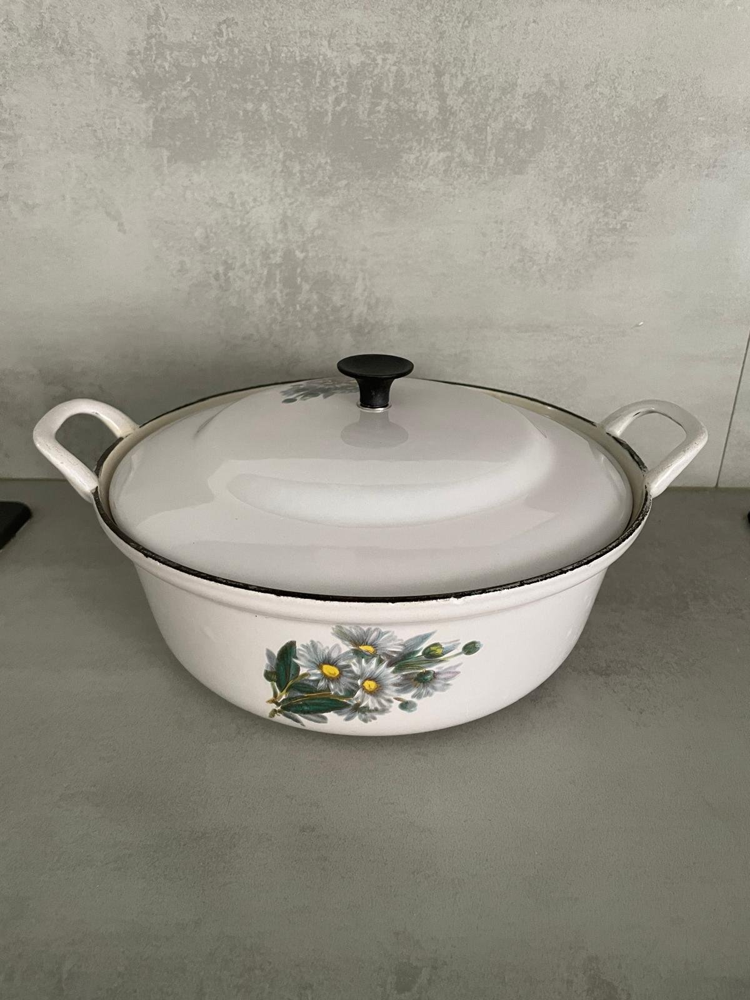
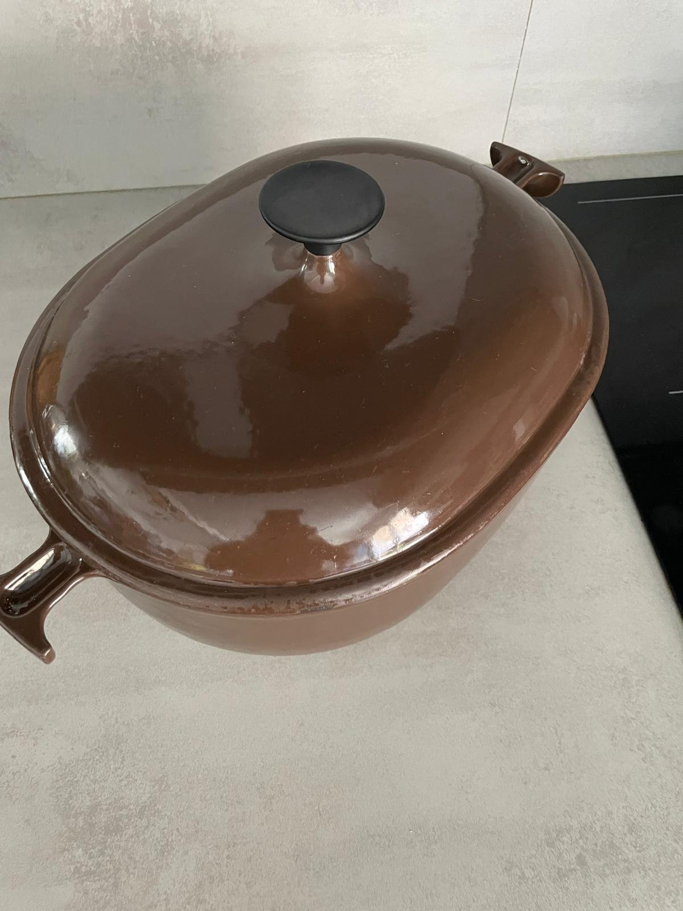
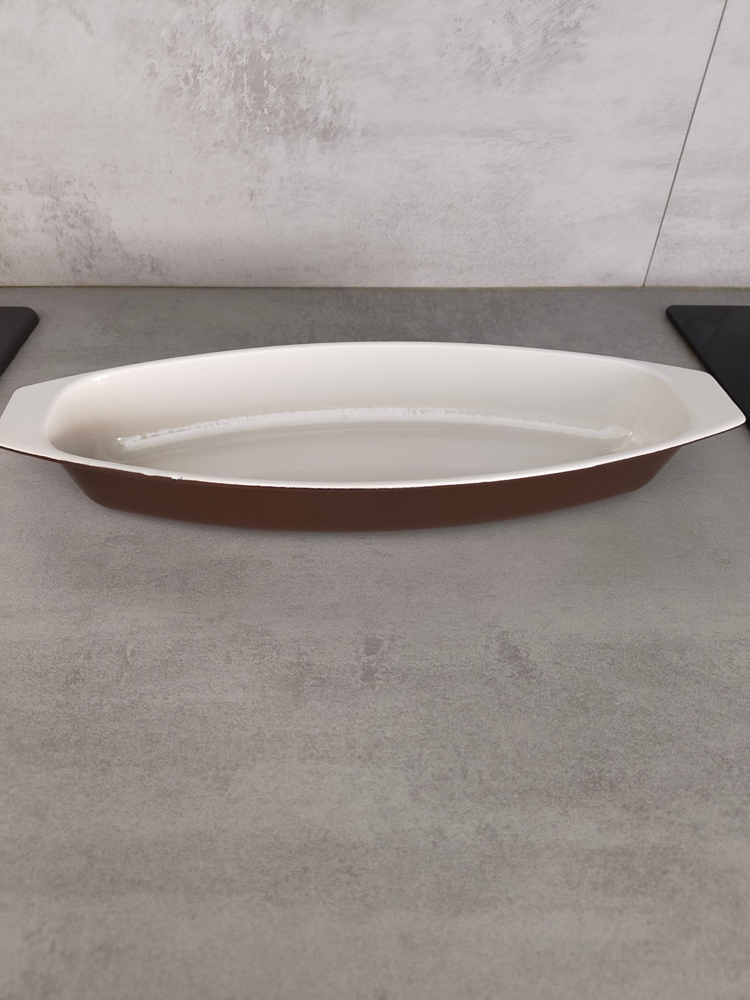
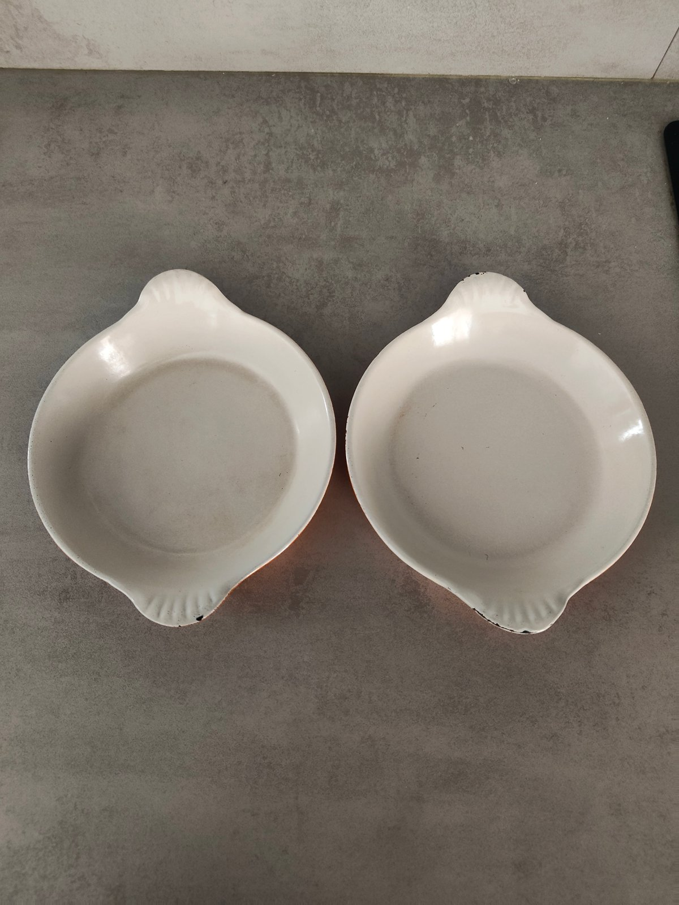
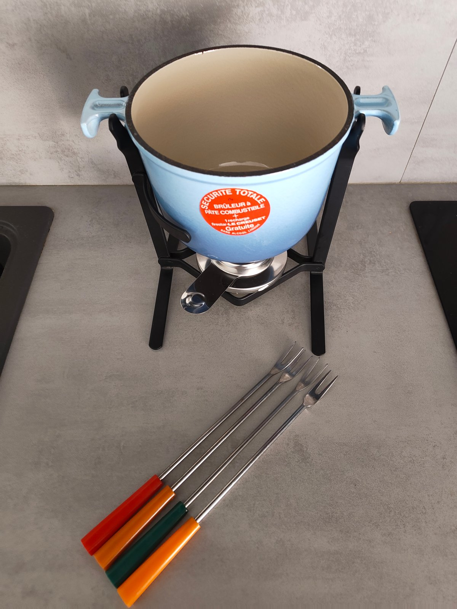
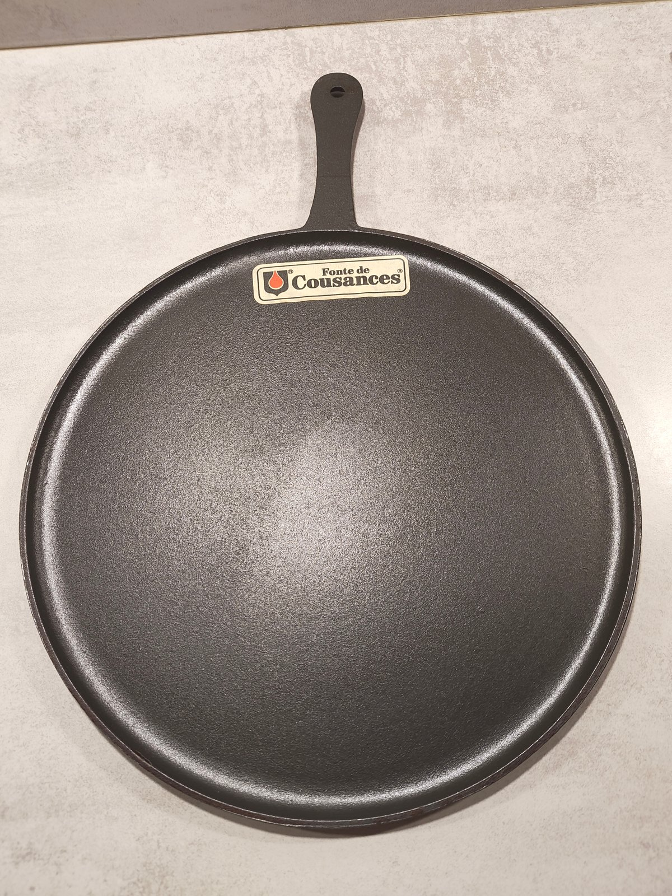
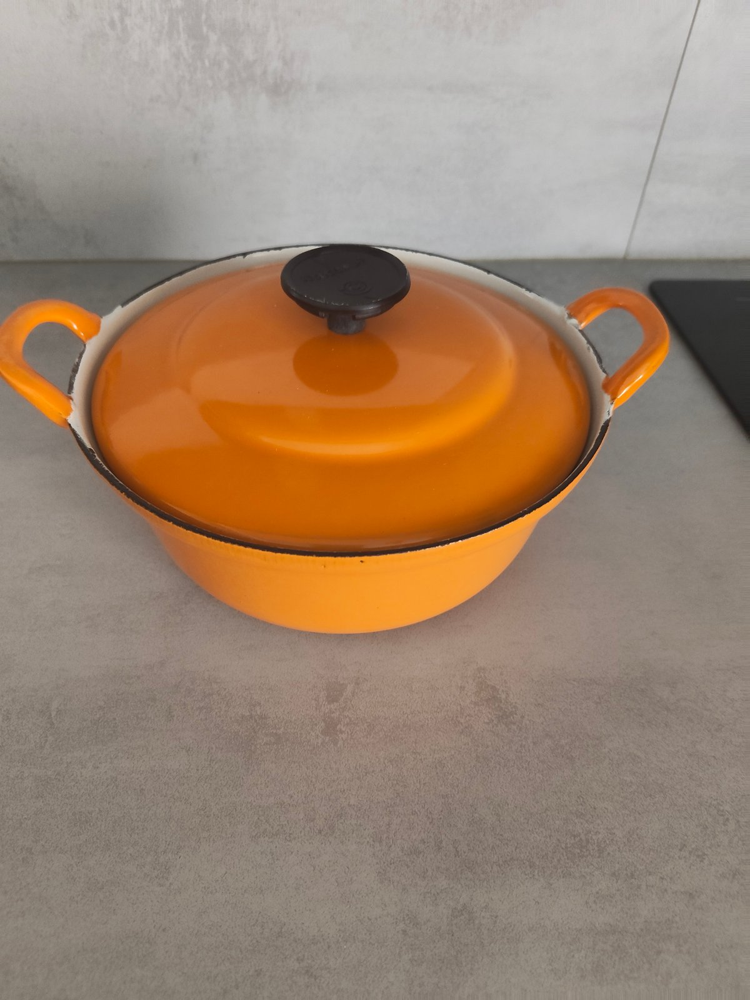
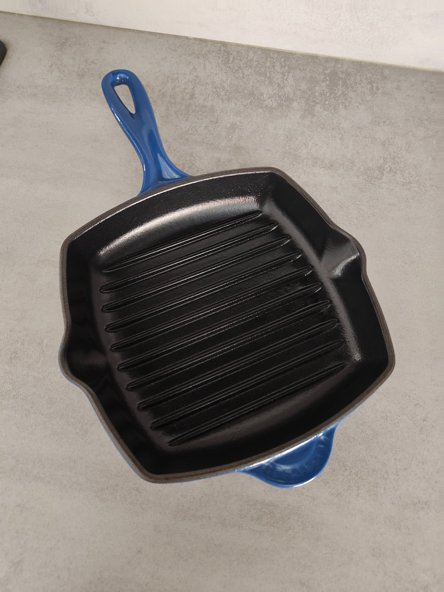
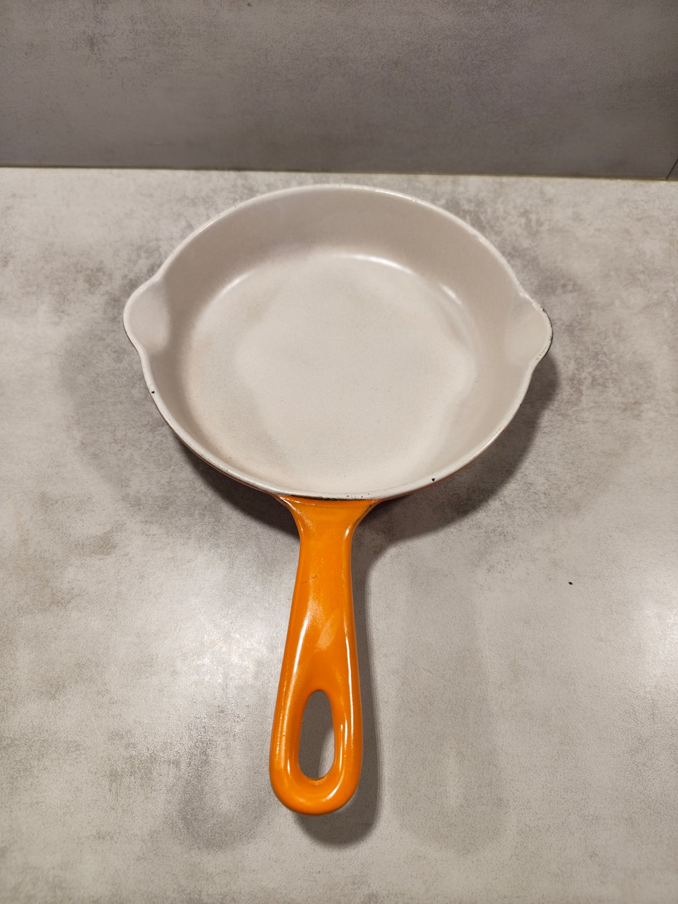
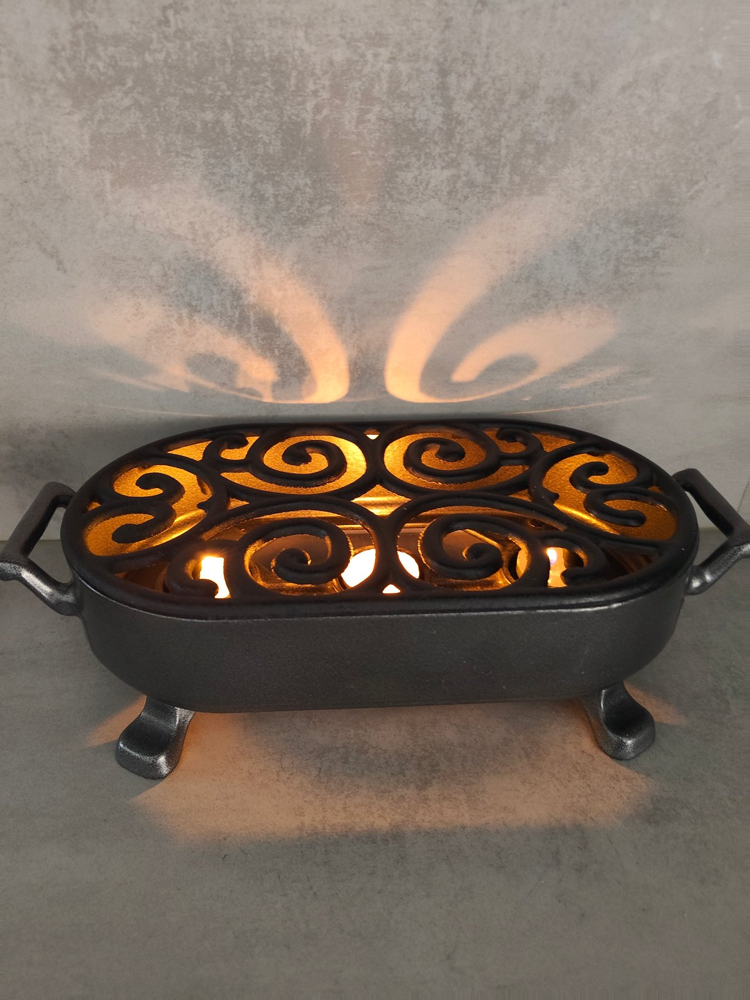

Sold Items
A look back at treasures that found a new home

SoldRare Vintage Le Creuset White Enamel Cast Iron Cocotte with Floral Pattern
145€

SoldRare Vintage Le Creuset “La Mama” Cocotte – Designed by Enzo Mari – Enameled Cast Iron
140€

SoldRare Vintage Le Creuset Fish Baking Dish – Enameled Cast Iron – Made in France
90€

SoldSet of 2 Vintage Le Creuset Cast Iron Oven Dishes – No. 3 – Made in France (1960–1970)
50€

SoldVintage Le Creuset “La Mama” Fondue Set – Designed by Enzo Mari – Enameled Cast Iron – Made in France
140€

SoldVintage Le Creuset / Cousances Cast Iron Crepe Pan No.5 – Made in France (1950–1960)
150€

SoldVintage Le Creuset Cast Iron Casserole Dish – Model 20 – Made in France (1960–1970)
80€

SoldVintage Le Creuset Cast Iron Grill Pan – Made in France
110€

SoldVintage Le Creuset Cast Iron Skillet / Small Saucepan No.16 – Made in France (1960–1970)
40€

SoldStaub Cast Iron Tealight Food Warmer – Vintage (1970–1980) – Made in France
160€